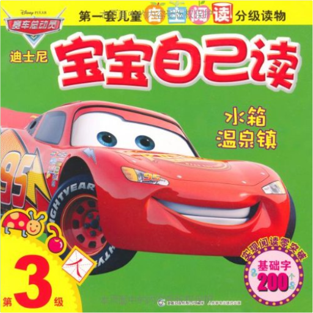
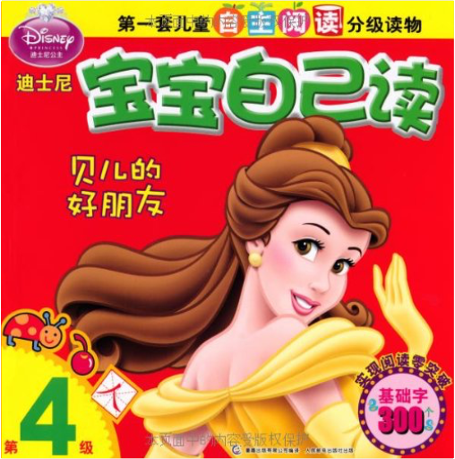
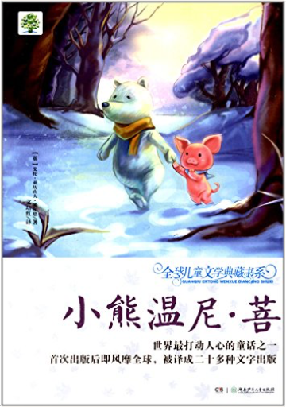
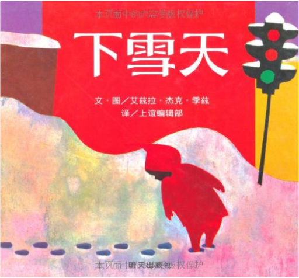
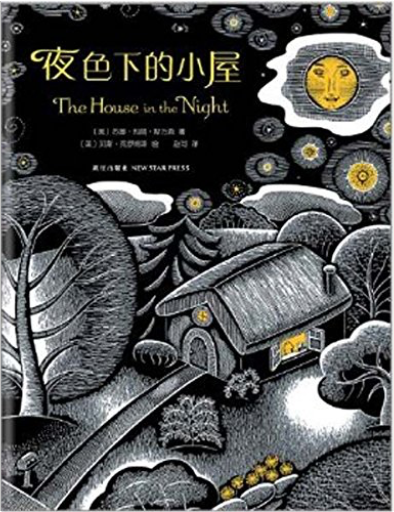
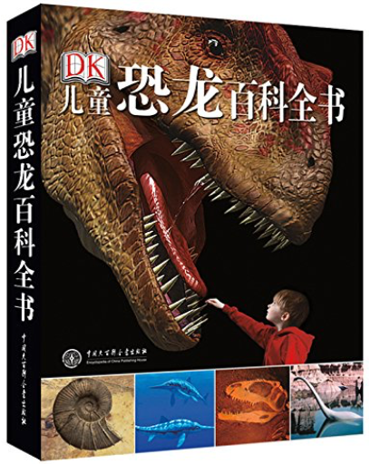
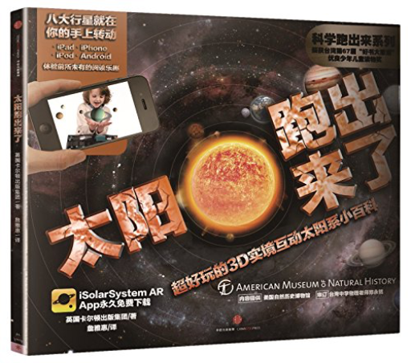
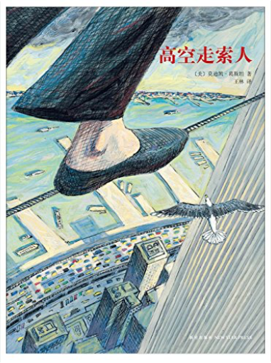
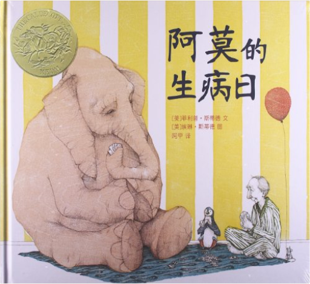

迪士尼宝宝自己读•第3级:水箱温泉镇美国迪士尼公司  《迪士尼宝宝自己读·第3级:水箱温泉镇》是一套儿童自主阅读分级读物，是迪士尼为3岁至6岁的孩子量身定制的集识字、阅读为一体的读本。孩子们终于可以愉快而自豪地对爸爸妈妈发表他们的自主阅读宣言：我能自己读故事啦！ 迪士尼宝宝自己读•第4级:贝儿的好朋友美国迪士尼公司 《迪士尼宝宝自己读·第4级:贝儿的好朋友》是一套儿童自主阅读分级读物，是迪士尼为3岁至6岁的孩子量身定制的集识字、阅读为一体的读本。孩子们终于可以愉快而自豪地对爸爸妈妈发表他们的自主阅读宣言：我能自己读故事啦！ 全球儿童文学典藏书系:小熊温尼·菩艾伦·亚历山大·米尔恩 《全球儿童文学典藏书系:小熊温尼·菩(升级版)》是世界最打动人心的童话之一，首次出版后即风靡全球，被译成二十多种文字出版。读了这本小小的书后，有种美好的感觉又短暂地回到了身边，也许下一分钟它就离我而去，至少这一次的温暖也足够我享用的了。 信谊世界精选图画书:下雪天艾兹拉·杰克·季兹 《下雪天》简单的故事却传神地展现出儿童的天真、好奇、幽默和创意。小男孩彼得，一早醒来发现昨夜下了雪，兴奋地跑到雪地里玩各种游戏，他堆了一个雪人和一个天使。回家前，还把在院子里捏的雪球放进口袋里，想留到明天再玩。回家后彼得泡在浴缸里，还忍不住一再回味，于是睡前去翻口袋，找寻带回来的雪，口袋却是空的，小雪球不见了，让他很失望。上床后又梦到太阳溶融了所有的雪。 夜色下的小屋苏珊•玛丽•斯万森 《夜色下的小屋》内容简介：“这是小屋的钥匙。/小屋里亮着一盏灯。/灯光下放着一张床。/床上躺着一本书。/书里飞着一只鸟儿。/鸟儿嘴里哼着一首歌……” DK儿童恐龙百科全书英国DK公司 《DK儿童恐龙百科全书》内容简介：哇！恐龙来了！史前庞然大物从侏罗纪公园中走到你的身边了！1200多幅精美图片准确还原史前恢弘场景，妙趣横生的解说词带你亲身徜徉远古世界。“砰——砰——”恐龙的足音已近！独家私密档案！大如鳄鱼的千足虫、以马为食的巨大恐鸟、我们的类人猿祖先……400种史前物种的“明星”档案一一呈现，独家精美细腻的复原图为每一种恐龙制作“写真”。暴龙、甲龙、伶盗龙、加斯顿龙……不知不觉中，恐龙成为你的朋友啦！恐龙大揭秘！暴龙有羽毛吗？恐龙有没有真正绝灭？所有你想知道的，你不知道的，有关于史前生物的一切，都将在《DK儿童恐龙百科全书》中找到答案！还在等待什么？快和我们一起开始一段远古探秘之旅吧！在这本《DK儿童恐龙百科全书》中，我们将详细地阐述过去的5亿年间各种生命的演化过程，从寒武纪最早出现的复杂生命，到中生代的恐龙、哺乳类和稍晚出现的鸟类。细腻逼真的复原图重现真实史前生命，带给你超乎想像的视觉冲击；多视角生动的图解文字，详细讲述每种恐龙的特征，系统展现史前地球完整生命画卷。各具特色的不同物种粉墨登场，呈现空前绝后生物大绝灭之前的世界剪影；尘封档案揭示史前生命种种真相，探索最前沿叹为观止的考古发现。 太阳跑出来了：超好玩的3D实境互动太阳系小百科（科学跑出来系列）英国卡尔顿出版集团 《科学跑出来》系列利用AR（增强现实）技术与科普知识相结合，每册图书32页，包含4-5个互动增强现实动画，知识与互动体验完美搭配，是全新的划时代儿童科普书，让孩子爱上科学！ 高空走索人莫迪凯·葛斯坦 《高空走索人(2014版)》内容简介：1974年，纽约世贸中心双子星大楼即将竣工之际，法国杂技艺术家菲利普•帕特在两座楼之间拉起了一条钢索，他在400米的高空行走，舞蹈，做着各种各样的表演，时间长达一个小时。《高空走索人》紧扣菲利普那满怀诗意和魔力的艺术激情，用简洁冷峻的语言和精彩的油画笔法，让每一个细节丝毫毕现，还巧妙地设计了两个拉页：水平式拉页，引领读者一起漫步空中；垂直式拉页，更加突出了双子星大楼梦幻般的高度和距离。 麦克米伦世纪大奖绘本:阿莫的生病日菲利普·斯蒂德 《麦克米伦世纪大奖绘本:阿莫的生病日》内容简介：凯迪克金奖作品《阿莫的生病日》以舒缓的节奏，为生活在繁忙大都市里的人们，讲述了一则打动我们日渐冷漠心弦的小故事。阿莫是一位和善的动物园管理员，过着规律平淡而又充实快乐的日子。每天，他都要挤出时间去看望几位好朋友：陪大象下棋、和乌龟赛跑、跟企鹅坐坐、给爱流鼻涕的犀牛递手绢，并且给猫头鹰讲故事。 |
 Made with Delicious Library
Made with Delicious LibraryGuangzhou, AP zipflap congrotus delicious library Yv, Jarod